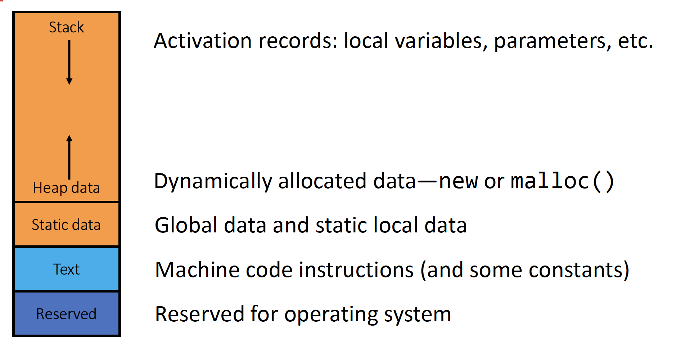
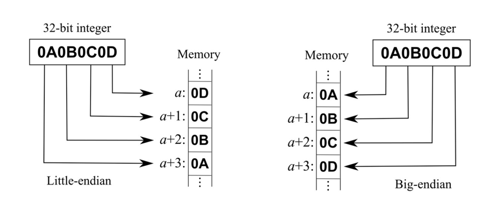
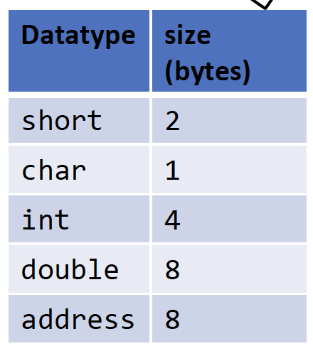
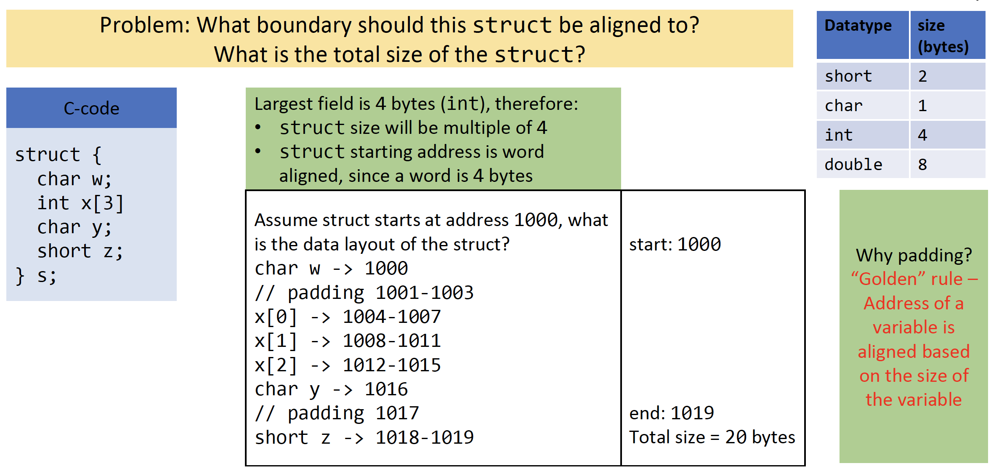
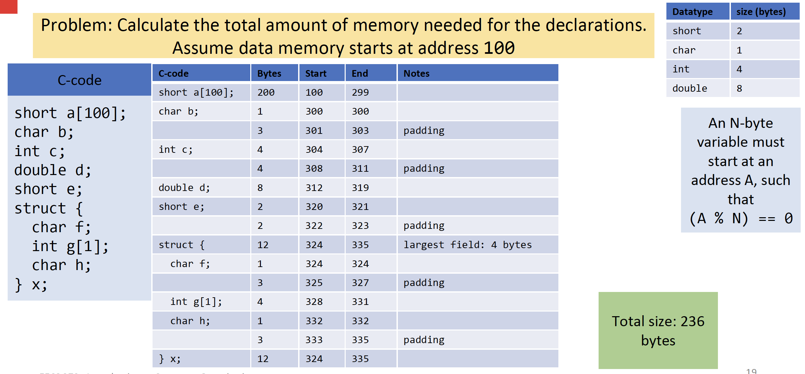
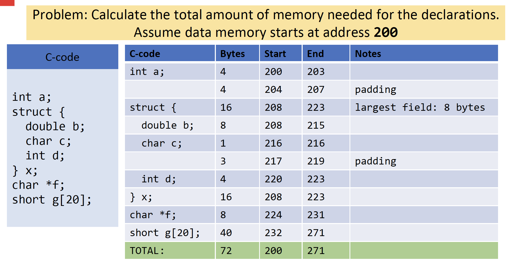

3 Assembly
3.1 Basics
3.1.1 Instruction Encoding
3.1.2 Properties
3.2 Special Purpose Registers
Return Address:
- Example: ARM register X30, aka Link Register (LR)
- Holds the return address or link address of a subroutine
Stack Pointer
- Example: ARM register X28-SP, or x86 ESP
- Holds the memory address of the stack
- Points to the bottom of the stack
Frame Pointer
- Example: ARM register X29-FP
- Holds the memory address of the start of the stack frame
Program Counter (PC)
- Cannot be accessed directly in most architectures
- Accessed indirectly through jump insts
The above registers store memory addresses
0 Value Register
- ARM register X31-XZR
- no storage, reading always return 0
- lots of uses - ex: mov->add
- Its a source of 0s
- We can throw a value away by writing to it
- We can get a 0 by reading it
- We can use fewer opcodes if we have a 0 value register
- Eg you can make a move instruction by adding 0
Status Register
- Example: ARM SPSR, or x86 EFLAGs
- Status bit set by various instructions
- Compare, add (overflow and carry), etc
- Used by other instructions like conditionanl branches
3.3 Memory
Machine with \(n\)-bit address can reference memory locations \([0, 2^n-1]\)
Assembly instructions have multiple ways to access memory (ie addressing)

Addressing Modes
- Direct addressing - mem address is in the instruction
- Register indirect - mem addr is stored in a reg
- Base + Displacement - reg. indirect + an imm. value
- PC-relative - base + displacement using the PC (essentially PC + imm. value)
A word is a collection of bytes
- Exact size of a word depends on the architecture
- In ARM a word is 4 bytes
ARM and most modern ISAs are byte addressable
- I.e. each addr. refers to a particular byte in memory
3.4 Big Endian vs Little Endian
Endian-ness: ordering of bytes within a word
- Little - increasing numeric significance with increasing memory addresses
- Big - opposite, most significant byte first
- Internet is big indian, x86 is little endian, ARM can switch
- No advantage to either one, just arbitrary

How to tell the endian-ness of a system?
- Method 1: Using simple C program to check byte order:
unsigned int x = 1;
char *c = (char*)&x;
if (*c)
printf("Little Endian\n");
else
printf("Big Endian\n");- The integer x is assigned 1, which in memory is represented as 0x00000001.
- We then take a pointer to the first byte (char* c = (char*)&x).
- If the first byte (*c) is 1, the system is Little Endian (least significant byte stored first).
- If the first byte is 0, the system is Big Endian (most significant byte stored first).
3.5 Memory Layout
3.5.1 Memory Layout of Variable
- Most modern ISAs require that data be aligned
- alignment: An N-byte variable must start at an address A, such that A % N = 0
- i.e. address must be divisible by the size of the variables
- alignment: An N-byte variable must start at an address A, such that A % N = 0
- “Golden” Rule: Address of a avariable is aligned based on the size of the variable
- char is byte aligned (any address is fine)
- 1 byte, anything mod 1 is fine
- short is half-word (H) aligned (LSB of address must be 0)
- int is word (W) aligned (2 LSBs of address must be 0)
- char is byte aligned (any address is fine)
- Why? This simplifies hardware needs for loads and stores
- Otherwise multiple memory accesses are needed to access one variable
3.5.2 Structure Alignment
- Each field in a struct is laid out in the order it is declared using the Golden Rule for alignment
- Identify largest (primitive) field
- Starting address of overall struct is aligned based on the largest field (any primitive variable)
- Primitives are mostly 1,2,4,8 bytes
- Size of overall struct is a multiple of the largest fields
- Why? So that we could have an array of structs
- Guarantees that each instance of struct is aligned the same way
- Starting address of overall struct is aligned based on the largest field (any primitive variable)
- Note: Notice how arrays are itsel a struct, thus arrays are aligned on its data type rather than the overall size of the array
Why care about data layout?
- Compilers don’t reorder variables in memory to avoid padding
- Programmer is expected to manage data layout for your program and structs
- Tip: Powers of 2s for arrays
- Can use shifting to access faster
3.5.2.1 Examples
Pointers are 8 bytes in ARM and x86



